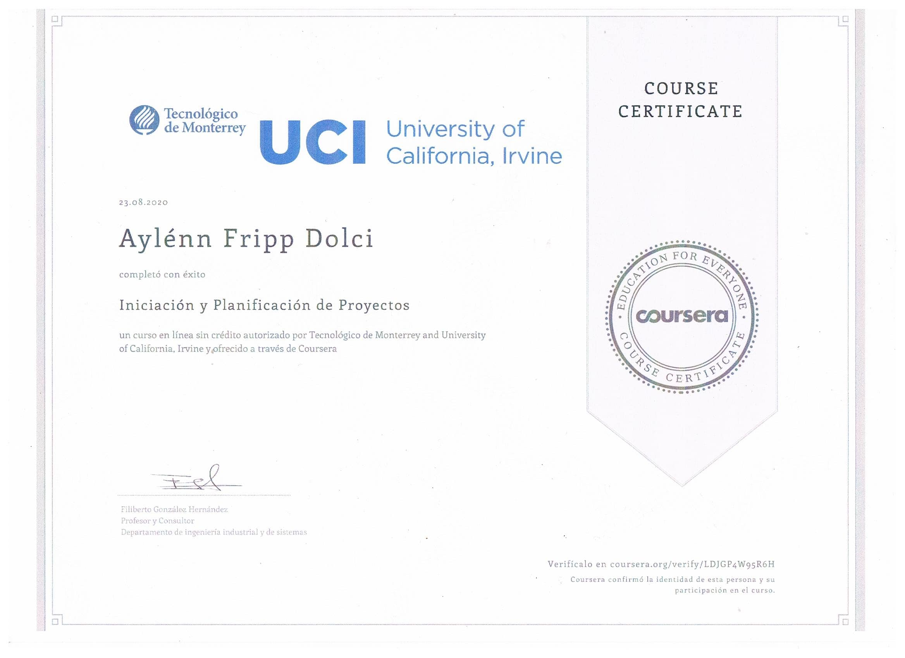
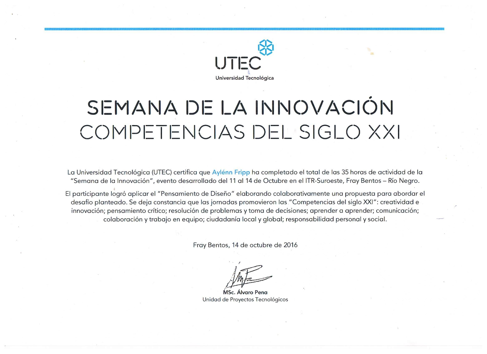

Otros conocimientos
JavaScript
CoderHouse
Mayo 2021 - Agosto 2021
Diseño Web

CoderHouse
Agosto 2021 - Septiembre 2021
Write Professional Emails in English
Georgia Institute of Technology
Agosto 2020
Iniciación y Planificación de Proyectos
Tecnológico de Monterrey / University of California, Iverne
Agosto 2020
Semana de la Innovación
Universidad Tecnológica (UTEC) ITR Suroeste
Octubre 2016